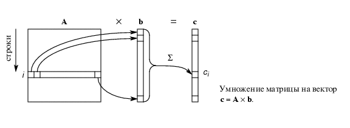
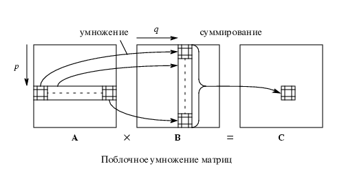
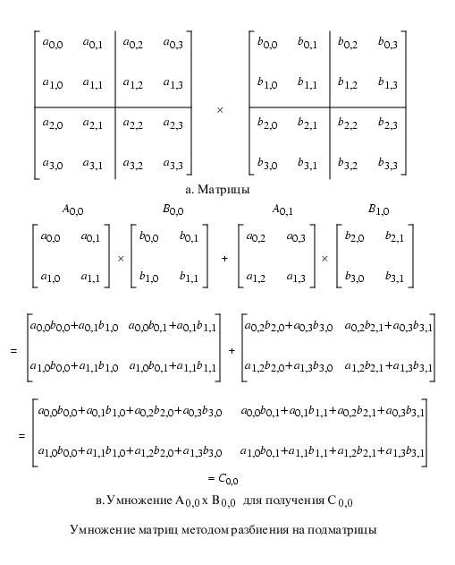
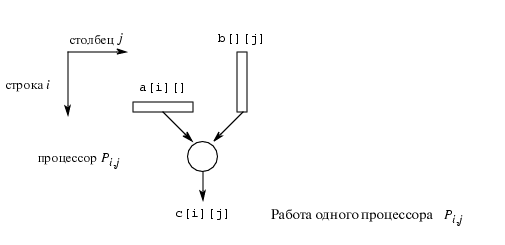
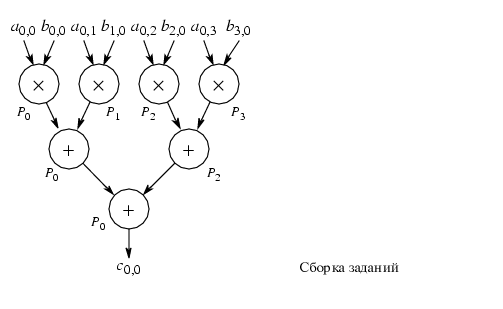

Умножение матрицы на вектор

Задача умножения двух квадратных матриц (n x n)
Последовательный код программы умножения двух квадратных матриц
(n x n) на языке C:
for(i=0;i<n;i++)
{
for(j=0;j<n;j++)
{
c[i][j]=0;
for(k=0;k<n;k++)
{
c[i][j]=c[i][j]+a[i][j]*b[i][j];
}}}
Этот алгоритм требует выполнения n3 операций умножения
и n3 операций сложения, ведущих к оценке общего времени (time complexity) как
O(n3).
Рассмотрим различные алгоритмы распараллеливания этой задачи и сравним
их производительность. Этим будет наглядно показано, что процесс распараллеливания
является процессом творческим.
1)Простой параллельный код
Для n- процессоров получим общее время (time complexity) как
O(n2). (Каждый процессор выполняет цикл операций для своего фиксированного i)
Для n2- процессоров получим общее время (time complexity) как
O(n), где один элемент матриц A и B передается каждому процессору. (Каждый
процессор выполняет цикл операций для своей пары фиксированных i
и j)
В обоих случаях с n- и n2- процессорами время исполнения программы
можно оценить как O(n3)=n*O(n2)=n2,*O(n).
Результат достаточно неожиданный на первый взгляд. Это не оптимальные алгоритмы распараллеливания (так
как O(n3) не равно n3*O(log n).
2)Блочное матричное умножение
Алгоритм распараллеливания умножения двух квадратных матриц (n x n) с использованием подматриц
Представим нашу матрицу в виде s2 подматриц. Каждая подматрица будет
состоять из (n/l) x (n/l) элементов. Обозначим Ap,q подматрицу в
подматрице ряда p и подматрице столбца q.
Поясняющие рисунки :


for(p=0;p<s;p++)
{
for(q=0;q<s;q++)
{
C_p,q=0;
for(r=0;r<m;r++)
{
C_p,q=C_p,q+A_p,r*B_r,q;
}}}
Строка программы "C_p,q=C_p,q+A_p,r*B_r,q" означает умножение подматриц Ap,r и Br,q
и дальнейшее сложение их в подматрицу Cp,q.
Для того, чтобы один процессор вычислял каждый из элементов C, понадобится
n2 процессоров. Необходим один ряд элементов A и один столбец
элементов B. Некоторые одни и те же элементы посылаются на несколько процессоров.
Можно использовать подматрицы.
На следующем рисунке изображена работа Pi,j процессора.

Анализ затраченного времени
a) На обмен сообщениями:
При разделении сообщений на n2 процессоров время, затраченное на коммуникации:
tcomm=n2
(tstartup+2n*tdata)+n2(tstartup+
2n*tdata)=n2(2tstartup+(2n+1)tdata)
Широкое вещание по отдельной связи даст:
tcomm=(tstartup+(n2) tdata)+
n2(tstartup+(n2) tdata).
б) На вычисления:
Вычисление каждого элемента состоит из m умножений и n сложений:
tcomm=2n
n чисел могут быть сложены за log n шагов, используя
n-штук процессоров:

Общее время (time complexity) при использовании n3 процессоров
оценивается как O(log n).


 [Назад]
[Оглавление]
[Вперед]
[Назад]
[Оглавление]
[Вперед]
Последнее обновление 21.11.2001 WebMaster